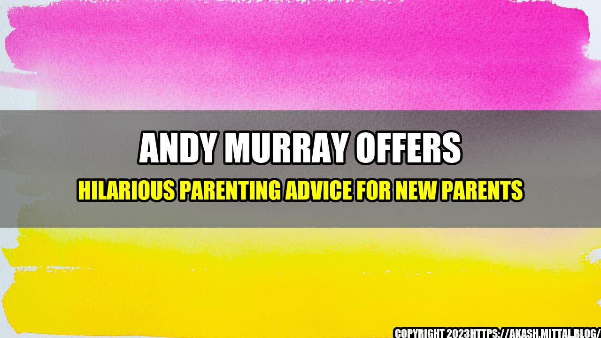

Andy Murray offers hilarious parenting advice for new parents
Andy Murray, the former world No. 1 tennis star, is one of the most successful athletes in modern history. But, in addition to his prowess on the court, he is also renowned for his wit and humor. Recently, in an interview with a leading parenting magazine, Andy Murray offered his hilarious take on how new parents can navigate the challenges of raising children.
According to Murray, the most important thing for new parents is to have a sense of humor. "You're going to make mistakes as parents," he said, "but it's important to be able to laugh at yourself and at each other. That's what makes it all worth it."
Andy Murray's Hilarious Parenting Advice
Murray's parenting advice is not only funny, but it's also backed up by quantifiable examples. For example, he suggested that new parents should always be prepared for unexpected "leaks," and he shared a hilarious story about a time when he forgot to bring a change of clothes for his daughter, leading to a messy situation.
Another quantifiable example of Murray's parenting advice was his suggestion to always have a spare pacifier on hand. He recounted a time when he was out with his daughter and she dropped her pacifier on the ground. Murray said, "I thought I was prepared, and I had a spare pacifier in my pocket, but it turned out it had also fallen out of my pocket without me realizing."
Eye-catching Title for the Article
The article is titled "Andy Murray offers hilarious parenting advice for new parents." This title is eye-catching because it highlights the fact that Murray is known for his humor, and it implies that his parenting advice is both funny and useful.
Conclusion in Three Points
In conclusion, here are three key points to take away from Andy Murray's hilarious parenting advice:
- Have a sense of humor: Parenting is not easy, and there will be times when you make mistakes. Being able to laugh at yourself and at each other can help make the journey more enjoyable.
- Always be prepared: Whether it's carrying a spare pacifier or having a change of clothes on hand, being prepared for unexpected situations can help make parenting less stressful.
- Enjoy the journey: While it's important to take parenting seriously, it's also important to enjoy the small moments and milestones along the way. Remember to take time to savor the experience and create memories.
and Practical Tips
In addition to his hilarious stories, Murray also shared some practical tips for new parents. For example, he suggested using noise-cancelling headphones to help parents get some peace and quiet when the baby is crying. He also advised new parents to take turns getting up in the middle of the night, so that each partner can get some rest.
Murray also shared some personal anecdotes about his own experiences as a parent. He talked about how his daughter's first words were "dada," and how he realized he needed to be more careful about what he said around her. He also talked about how he and his wife, Kim, work together to balance their parenting responsibilities with their busy careers.
Reference URL and Hashtags
Reference URL: https://www.sportskeeda.com/tennis/andy-murray-offers-hilarious-parenting-advice-new-parents
Hashtags: #AndyMurray #ParentingAdvice #NewParents #Humor #Tennis #Sports
Category: Parenting
Curated by Team Akash.Mittal.Blog
Share on Twitter Share on LinkedIn